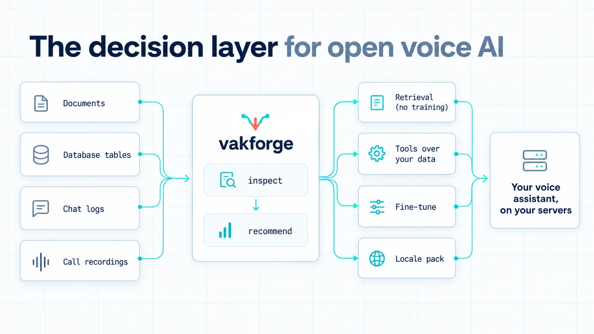
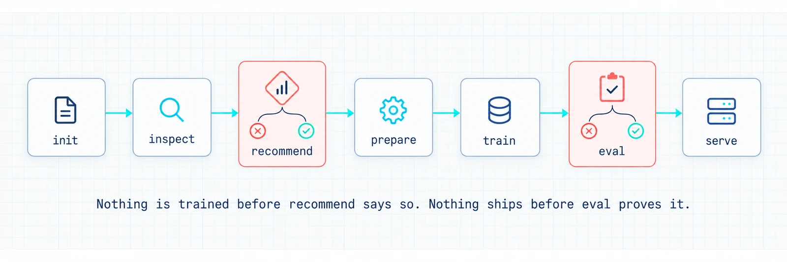

vakforge
The decision layer for open voice AI.
vakforge helps you build a voice assistant from the data your company already has, and run it on your own servers. Before you spend anything on GPUs, it tells you what actually needs training. Usually that is less than you think.

- Bring the data you have: documents, FAQs, database tables, chat logs, CRM exports, recorded calls. PDF, Word and Excel files are listed as skipped until text extraction lands; export them to text or CSV for now.
- Open models only: the assistant itself runs on your servers and never calls a hosted API. (Generating synthetic training dialogues may use a provider you choose, only after you approve it.)
- Any language: through locale packs. Launching with English (US, UK, India) and Hinglish.
Status: pre-alpha.
init,inspect,recommend,report,validateand the locale packs work today. The agent skill that writes the rest of the path is written but has not yet been run end to end on a real project. Seedocs/ROADMAP.md.
Try it
pip install vakforge
vakforge init my-assistant --locale en-US # or en-GB, en-IN, hi-Latn-IN
# copy your files into my-assistant/data/raw/, then:
vakforge inspect my-assistant/data/raw -o inspect.json
vakforge recommend inspect.json -o recommend.json
vakforge report inspect.json recommend.json -o report.html # one page to share or save as PDF
inspect reports what is in the folder: languages, personal data (in table columns too), tables that could become tools, and every file it skipped and why. recommend says what each source needs, and whether anything is worth fine-tuning yet. Nothing leaves your machine.
No data to hand? examples/hinglish-shop is a small synthetic project with both reports committed next to it.
Why vakforge exists
Open voice models are good enough today. Moshi, PersonaPlex, LFM2.5-Audio and Qwen-Omni can listen and talk, and strong open speech-to-text and text-to-speech models exist too. Yet most companies still pay per minute for a closed voice API.
That is not because the open models are worse. It is because nobody helps them answer four questions:
- Should we fine-tune, or is retrieval enough?
- Which model fits our language, our speed needs and our hardware?
- What data do we need, and are we allowed to train on our calls?
- How do we prove the result is better before a customer hears it?
vakforge answers them from your own data.
The hard part was never the models. It was the decision.
"Open models strengthen safety and cybersecurity, accelerate innovation and diffusion, and enable sovereignty." Jensen Huang, NVIDIA, on X, 24 July 2026
vakforge is about that last word: owning your voice AI instead of renting it.
How it works

initcreates a project folder for your language and market.inspectreads your data folder and reports what is in it: languages, personal data, tables that could become tools, audio quality.recommenddecides what needs changing. Often the answer is retrieval and tools, with no training at all.prepare,train,eval,serveare built for your project by a coding agent using the vakforge skill. It trains only whatrecommendasked for, and ships only ifevalshows the result beats the base model.
Today the CLI covers init, inspect, recommend, report, validate and the locale packs.
How the decision is made
| If the assistant should... | The fix is | Training? |
|---|---|---|
| know your prices, policies and FAQs | retrieval: look facts up at answer time | none |
| look things up, book, open tickets | tools over your tables | only if it keeps missing |
| follow your call flow and tone | behaviour fine-tune of the language model | small |
| understand your callers' accents, names, amounts | speech-to-text fine-tune | small |
| sound like your brand | voice cloning, with written consent | voice only |
| handle interruptions naturally | a full-duplex model trained on real calls | large |
| speak another language | a locale pack plus a model that speaks it | depends |
Every route ends the same way: test it against your own held-out data, and ship only if it beats the base model.
Each goal has its own fix, and most of them are not a full fine-tune. The detailed rules, with how much data each route needs and what hardware it takes, are in docs/DECISION_GUIDE.md.
The problem, for engineers
Open speech-to-speech models exist. Fine-tuning scripts exist for some of them. Evaluation tools and serving frameworks exist. What is missing is one path from "here is what my company knows" to "here is a voice assistant that handles my workflow, I can prove it is better than the base model, and my existing voice client can talk to it without a rewrite." Every team rebuilds that path, and most of them fine-tune when they should have used retrieval.
What's in the repo
- A small library and command-line tool (
pip install vakforge). No machine-learning dependencies, so it runs on any laptop. It holds the dataset format, the data checks, the data inspector, the decision rules and the locale packs. - An agent skill (
skill/vakforge/). Add it to Claude Code or another coding agent. The agent reads your data, follows the decision rules, and writes the training and serving code for your project. It checks every library it uses against the installed source first, so it does not guess at APIs. It has not been run end to end on a real project yet; that is the next milestone on the roadmap. - Recipes (
docs/RECIPES.md). Researched paths from an open base model to a running assistant: which model suits which language and GPU, what it can and cannot learn, and the licence to read first. None have been run end to end yet, and the file says so on every page — a recipe is only marked tested once its report is committed.
| Command | What it does | Status |
|---|---|---|
vakforge init |
Create a project folder for your language and market | works |
vakforge inspect |
Report what is in your data folder | works |
vakforge validate |
Check a dataset file against the vakforge format | works |
vakforge locales |
List language packs and show their rules | works |
vakforge schema |
Export the dataset format as JSON Schema | works |
vakforge recommend |
Decide what needs changing, often "retrieval, not training" | works |
vakforge report |
Turn both reports into one page to share, in light or dark, printable to PDF | works |
prepare, synth, train, eval, serve |
Build, test and host the assistant | written per project by the agent skill |
Use it with a coding agent
The skill is where the knowledge lives. Copy it into your project and the agent follows the vakforge workflow: inspect, recommend, then write and test the prepare, train, eval and serve code for your case, verifying every upstream API against installed source first.
# Claude Code: project-level skill (or ~/.claude/skills/vakforge for every project)
mkdir -p .claude/skills
cp -r path/to/vakforge/skill/vakforge .claude/skills/vakforge
Then ask: "Build a Hinglish support assistant from the data in data/raw." Other agents that
read SKILL.md-style instructions work the same way; point them at the folder.
Bring the data you have
inspect reads Markdown, text and HTML documents, and question/answer files (CSV or JSON) as FAQs; CSV, TSV, SQL dumps and JSON/JSONL tables; WhatsApp exports, JSON chat logs, CSV or JSON files with one exchange per row (input/output, instruction/response, customer/agent and similar), and CSV files with one message per row (a role or speaker column and a text or message column); and WAV, FLAC, OGG, Opus (including WhatsApp voice notes) and MP3 audio. Anything else is listed with the reason it was skipped. The table below is where each kind of source ends up on the full path.
| You have | Where it goes |
|---|---|
| Documents, FAQs, policies | Looks facts up at answer time (retrieval), so prices and policies stay current without retraining. |
| Database tables, CRM, product catalogue | Turns them into tools the assistant can call, like "look up order by order id". |
| Chat logs, transcripts | Teaches the assistant how your team handles a conversation: steps, tone, hand-offs. |
| Recorded calls | Everything above, plus your callers' accents and the natural timing of real calls. Personal data is removed first. |
| Nothing yet | Generates example conversations in your language, so you can ship a first version and collect real data. |
Locale packs
The core works in any language. Everything that changes by language or country lives in a locale pack: how money, dates and phone numbers are written, which ID numbers count as personal data, the local privacy and call-recording rules, and which open models support the language. Adding a new market means adding a pack, not changing the core. See docs/LOCALE_PACKS.md, or run vakforge locales.
| Pack | Covers | Can the assistant speak it? | Status |
|---|---|---|---|
en-US, en-GB, en-IN |
US, UK and Indian English | yes, with every recipe | works |
hi-Latn-IN |
Hinglish: Hindi and English mixed, in Roman or Devanagari script | understands it; speaks English, or Hindi through the cascade recipe | works |
zh-CN |
Mandarin | via qwen-omni |
planned |
es, de, fr, pt-BR, ja, ar |
via qwen-omni or cascade |
planned, contributions welcome |
Recipes
| Recipe | Base model | Good for | Duplex | Hardware (train) | Status |
|---|---|---|---|---|---|
lfm25-audio |
LiquidAI LFM2.5-Audio-1.5B | workflow, tool use, style, CPU deploy | turn-based | 1x 24 GB GPU | planned (first) |
moshi-lora |
Kyutai Moshi / NVIDIA PersonaPlex | interruptions, natural timing, persona | full-duplex | 1x 40-80 GB GPU | planned |
qwen-omni |
Qwen3-Omni | multilingual incl. Mandarin, function calling | near-duplex | 80 GB / multi-GPU | planned |
cascade |
STT + LLM LoRA + TTS chosen by locale | any language with a good STT+TTS pair | turn-based | 1x 24 GB GPU | planned |
"Duplex" means the assistant can listen while it talks, so callers can interrupt it naturally. Details in docs/RECIPES.md.
Connecting your app
Your assistant runs an open model on your own servers. Nothing calls OpenAI or any other hosted API.
None of this is built yet — serving is written into your project by the agent skill, and this table is the design it follows, not a list of working endpoints.
The intent is that the server speaks the same WebSocket messages as OpenAI's Realtime API, so an app already talking to GPT Realtime changes one URL and clients like Pipecat, LiveKit and Twilio keep working. "Realtime compatible" describes a message format, never a dependency: the model is open and runs on your hardware. More connection types can be added without touching the model:
| Protocol | For | Status |
|---|---|---|
| OpenAI Realtime WebSocket (documented subset) | teams migrating off GPT Realtime; Pipecat, LiveKit, Twilio clients | first |
| WebRTC via LiveKit or Pipecat transports | browser and mobile apps, lowest latency | next |
| SIP / telephony | call centres and phone lines | next |
| Plain HTTP, one turn per request | batch jobs, simple integrations | planned |
| Gemini Live API format | teams on Google's stack | on request |
Why English and Hinglish first
English has the strongest open voice models, so every recipe works for US, UK and Indian English. Hinglish is the hard test: people switch between Hindi and English mid-sentence, write Hindi in Roman or Devanagari script, and say amounts like "2 lakh rupees" on noisy phone lines. If vakforge handles that, adding another language is mostly filling in a new pack.
Quick start
pip install vakforge
vakforge init my-assistant --locale hi-Latn-IN
# put your documents, tables, chat exports and call recordings in my-assistant/data/raw/
vakforge inspect my-assistant/data/raw
inspect prints a summary and writes inspect.json. vakforge recommend inspect.json reads it and writes recommend.json.
No data of your own yet? examples/hinglish-shop is a small synthetic project (Hinglish FAQ, two table exports, a WhatsApp chat) with both reports committed next to it, so you can see the output before installing anything.
Documentation
docs/DECISION_GUIDE.md: what needs customizing, and when not to fine-tunedocs/GLOSSARY.md: what the terms ininspectandrecommendoutput mean (turns, bars, verdicts, routes)docs/LOCALE_PACKS.md: what a locale pack contains, and how to add onedocs/DATA_FORMAT.md: the dataset formatdocs/ARCHITECTURE.md: how the code fits together, with diagramsdocs/RECIPES.md: per-model training recipesdocs/EVALUATION.md: metrics, report format, per-locale benchmarksdocs/DATA_ETHICS.md: consent, PII, licences, privacy law by regiondocs/ROADMAP.md: statusCONTRIBUTING.md
Related projects (we build on these, not against them)
Unsloth, LLaMA-Factory, ms-swift, kyutai-labs/moshi-finetune, NVIDIA PersonaPlex, liquid-audio, Qwen-Omni, Pipecat, LiveKit Agents, vLLM-omni, UltraEval-Audio, AI4Bharat, Common Voice
Licence
Apache-2.0 for this code. Each open model keeps its own licence; see docs/RECIPES.md. Datasets you create with vakforge are yours. The consent records vakforge asks for are there to keep it that way.